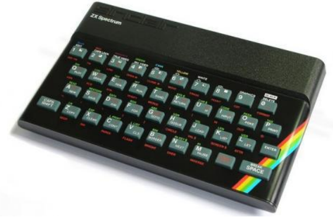
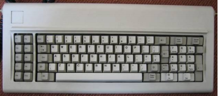
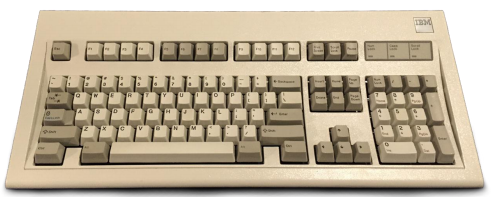
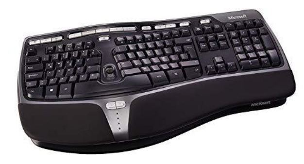
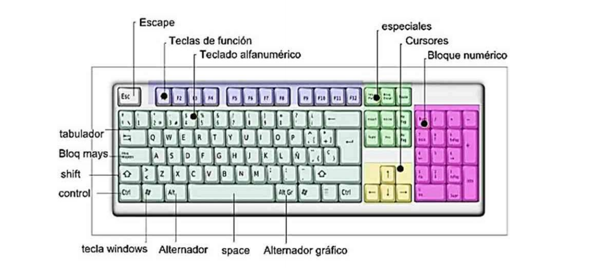

⠀
En el siglo XIX se originó el otro componente fundamental de los teclados actuales, físicos y digitales: el orden de las teclas, denominados QWERTY por las primeras cinco de la fila superior. Su diseño fue patentado por el invetor y político Chistopher Sholes en 1868 y posteriormente vendido a Remington en 1873. QWERTY cuenta con dos variantes: en Alemania se utiliza QWERTZ, muy similar pero cambiando la Y por la Z. Mientras tanto, en Francia se utiliza AZERTY donde se mantienen ciertas características pero el orden cambia bastante. El teclado en español también está modificado, con la inclusión de la letra Ñ. 1920 apareció el teclado Dvorak simplificado.⠀
Primeros Teclados:⠀
ZX SPECTRUM 48 K: No olvidemos que los primeros ordenadores, en las décadas de los años 50 y 60, solo estaban al alcance de los militares, las universidades y las empresas. Así que los primeros teclados que se hicieron populares, en la década de los 80, estaban montados encima de la placa base (ya que el ordenador era un único módulo con teclado incorporado) y tenían aspectos tan curiosos (y tan poco efectivos), como el mítico teclado de goma del ZX Spectrum 48 K, que era extremadamente lento y tenía una tasa de fallos bastante alta.⠀
⠀
TECLADOS IBM: Pero la compañía que prácticamente definió el estándar de los teclados de ordenador fue IBM, la inventora del PC. En los años 80 los teclados de PC tenían 83 u 84 teclas, como el del IBM PC XT, o el más moderno AT. En 1987 IBM desarrolló el teclado MF-II, también llamado Multifunción II o AT Extendido, que poseía un teclado extendido con el que sumaba 101/102 teclas. Es el que se ha mantenido hasta nuestros días, con pequeñas variaciones.⠀
⠀
⠀
TECLADOS WINDOWS: Microsoft, además de hacerse un hueco en la gama de calidad alta y de presentar avances ergonómicos como el Microsoft Natural Keyboard, añade tres nuevas teclas tras del lanzamiento de Windows 95. A la vez se generalizan los teclados multimedia que añaden teclas para controlar en la PC el volumen, el lector de CD-ROM o el navegador, incorporan en el teclado altavoces, calculadora, almohadilla sensible al tacto o bola trazadora. ⠀
Partes del teclado:⠀
Bloque de funciones: Va desde la tecla F1 a F12, en tres bloques de cuatro: de F1 a F4, de F5 a F8 y de F9 a F12.⠀
Bloque alfanumérico: Está ubicado en la parte inferior del bloque de funciones, contiene los números arábigos del 1 al 0 y el alfabeto organizado como en una máquina de escribir.⠀
Bloque especial: está ubicado a la derecha del bloque alfanumérico, contiene algunas teclas especiales como Impr Pant o PetSis, Bloq Despl, Pausa, Insert, Supr, Inicio, Fin, RePág, AvPág, y las flechas direccionales que permiten mover el punto de inserción en las cuatro direcciones.⠀
Bloque numérico: está ubicado a la derecha del bloque especial, se activa al presionar la tecla Bloq Num, contiene los números arábigos organizados como en una calculadora con el fin de facilitar la digitación de cifras.⠀
